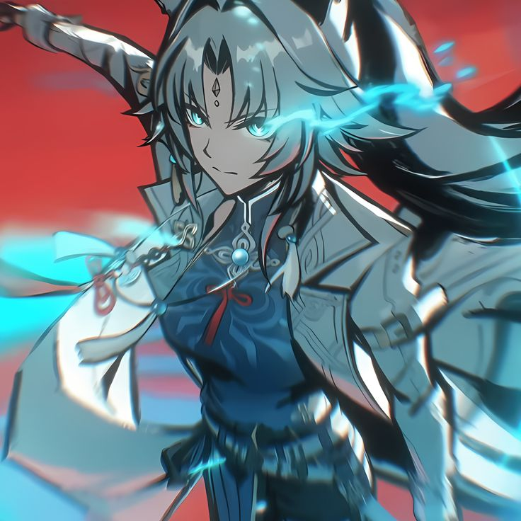
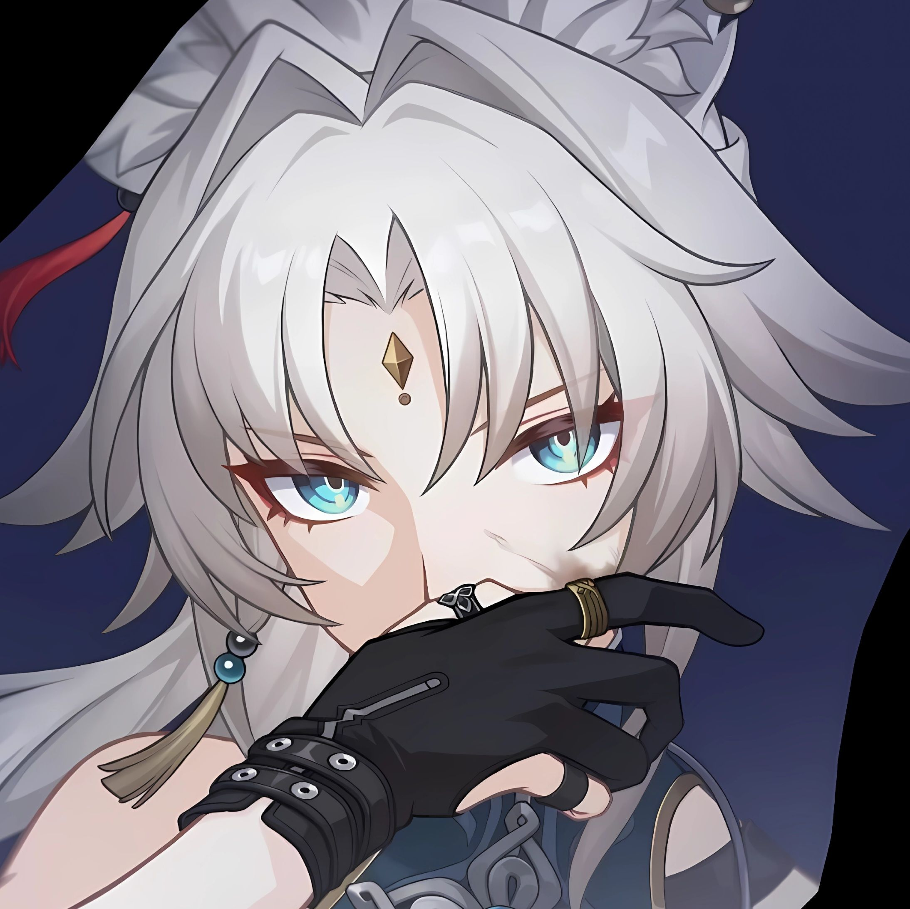

Feixiao - Honkai: Star Rail
Wiki dedicada al personaje Feixiao con información detallada, habilidades, y más.

Habilidades

Ataque básico: Rayos bajo tierra
Inflige daño de viento equivalente al 100% del ATQ a un solo enemigo.

Habilidad: Hacha de guerra
Inflige daño de viento equivalente al 200% del ATQ + ataque de seguimiento inmediato.

Ultimate: Terrasplit
Desata múltiples ataques eléctricos y reduce la Resistencia del objetivo.

Talento: Caza de truenos
Ataques de seguimiento tras ataques aliados. Daño aumentado 60% por 2 turnos.

Técnica: Nacido de la tormenta
Modo Arremetida: velocidad mejorada y daño de viento en área con crítico garantizado.
Información del Personaje

Nombre: Feixiao
Rareza: 5 estrellas
Elemento: Viento
Rama: La Cacería
Afiliación: Xianzhou Luofu
Historia: Feixiao es una poderosa guerrera con un espíritu indomable. Su conexión con el viento representa su libertad y fuerza.
Build Recomendada

- Cono de Luz: Caza Celestial
- Artefactos: Viento Desgarrador (4 piezas)
- Stats clave: Velocidad, ATQ%, Crítico/Daño Crítico
Galería